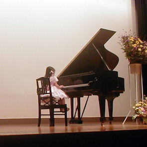
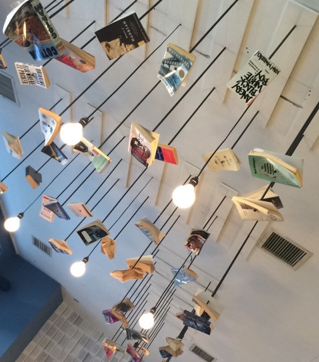
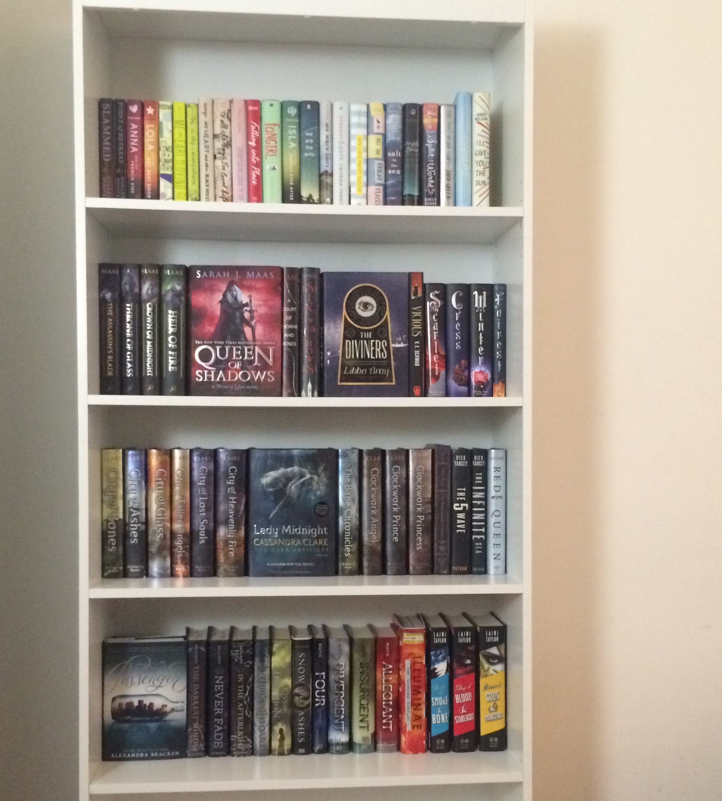

| Description | Photos | Achievements/Relevant Extracurriculars | ||
|---|---|---|---|---|
| Ballet | Ballet is known for "painful" pointe shoes and tutus as well as graceful dance movements. I have been doing ballet since the age of 3. Ballet allows me to move my body as I want and feel great from within. |
 |
 |
Back in Japan, I performed three variations, a dance sequence that one ballerina performs alone. One of them was the "Bluebird" from Sleeping Beauty. Also, in one of the recitals, I choreographed the dance sequence in Nutcracker, the "Waltz of the Flowers." |
| A ballet move called attitude. | Posing for a dance piece we performed as a group (I'm the one in green). | |||
| Piano | I have been playing the piano on and off, since I was 5. I love playing Chopin as well as singing to songs and playing the instrumental music along. |  |  |
I learned a challenging waltz, named "Farewell" by Chopin and performed it in various occasions. I also played a duet with my mother once, which was the "Masquerade" by Khachaturian. |
| I performed a small piece when I was 5 years old. | Frederic Chopin is my favorite composer of all time. His nocturnes are the best. | |||
| Singing | Pop music and Broadway musicals are the genres of music I like to sing. I like to sing karaoke with my friends who have similar taste in music. |  |
 |
I am currently in the spring musical Fiddler on the Roof, playing a role named Bielke. |
| I am obsessed with the musical Hamilton, and I love playing the songs on the piano and singing along. | My favorite singer is Taylor Swift, 1989 being my favorite album of hers. | |||
| Reading | I started to read for pleasure when I was in 6th grade. The first series I read was The Mortal Instruments, and ever since then I enjoy reading fantasy books, as well as realistic and historical fiction. |  |  | I have attended several events to meet authors and have my books signed and personalized. I curretly own 10 personalized books. |
| This is one of my favorite bookstores called McNally Jackson. It is known for some books hanging from the ceiling. | This is my bookshelf. I aquire many books and am running out of space. | |||